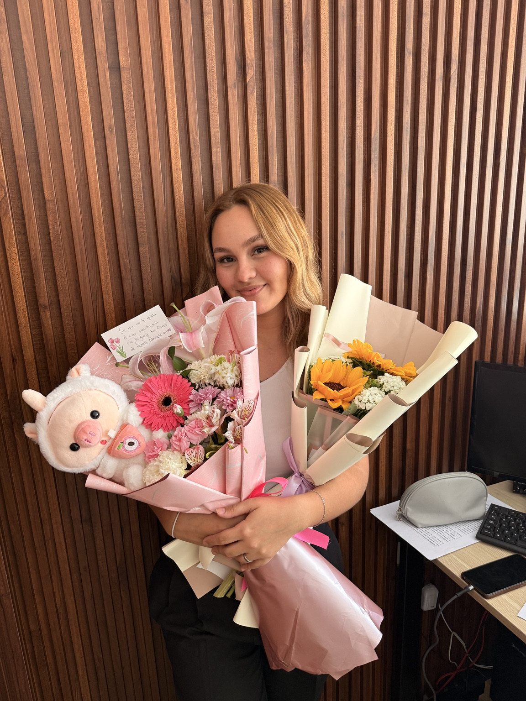
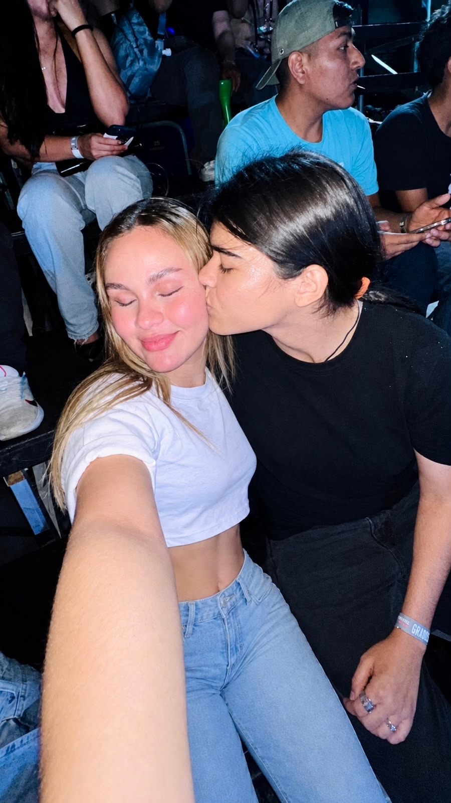
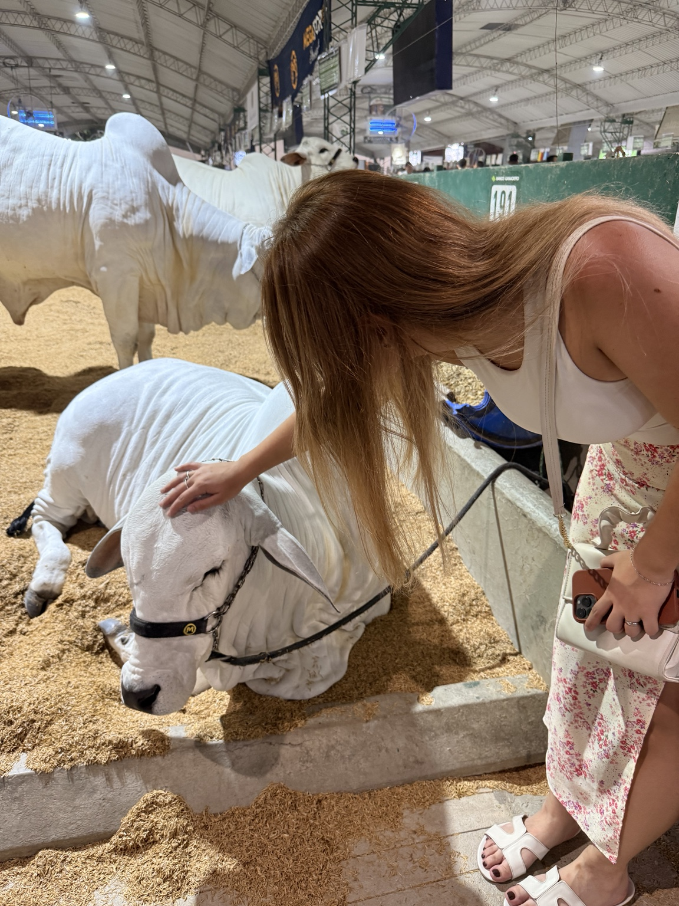
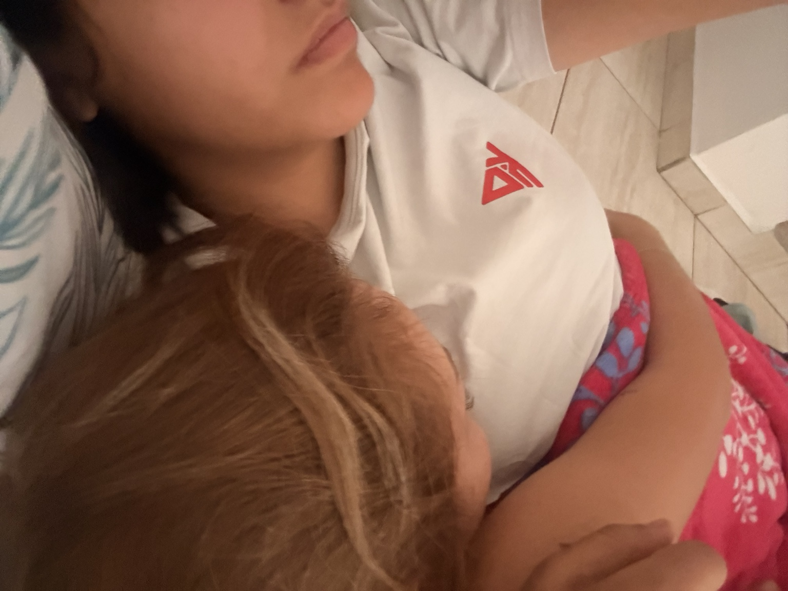
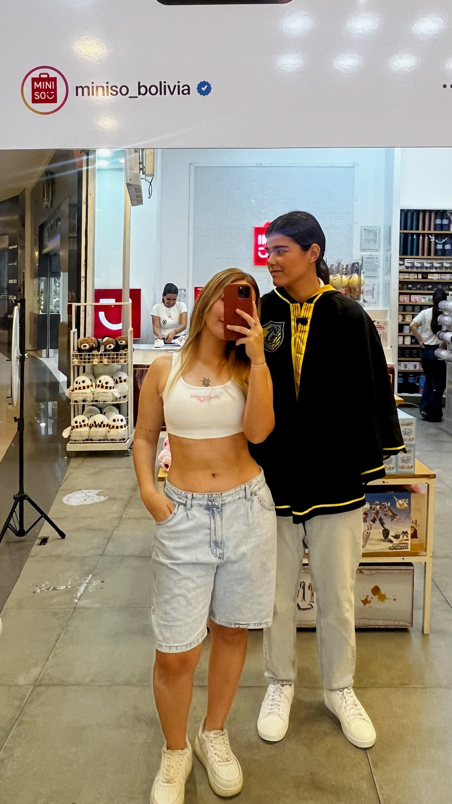
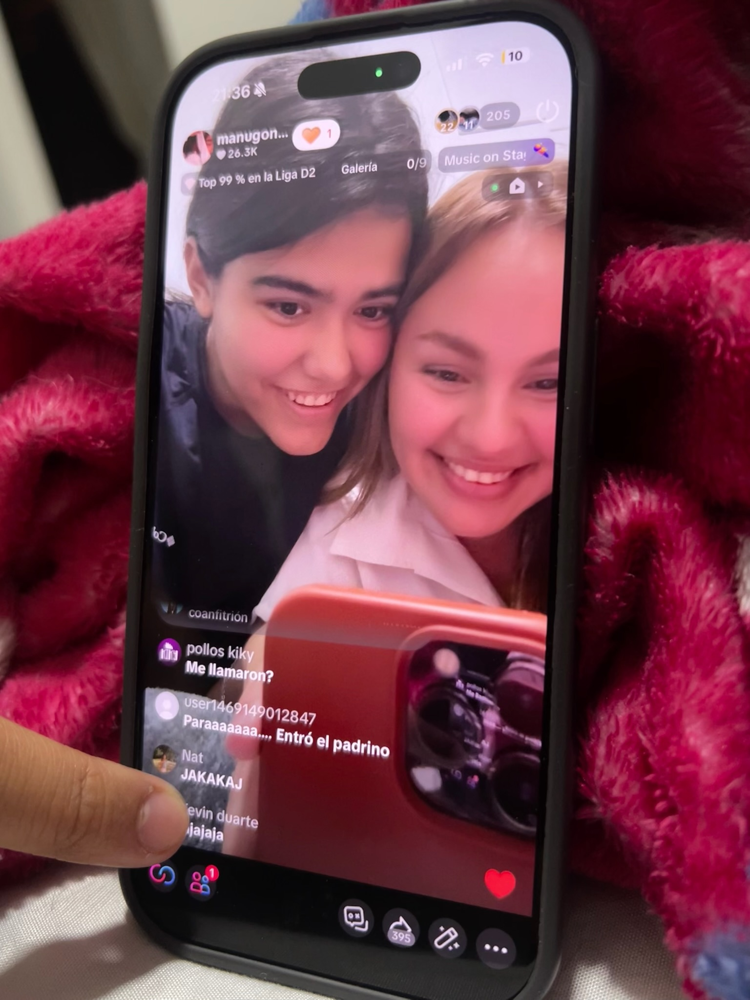
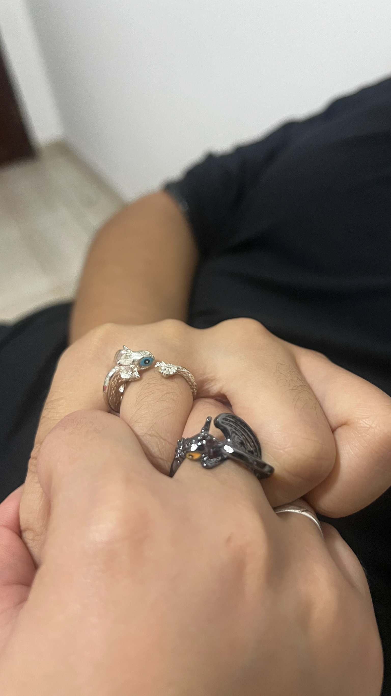
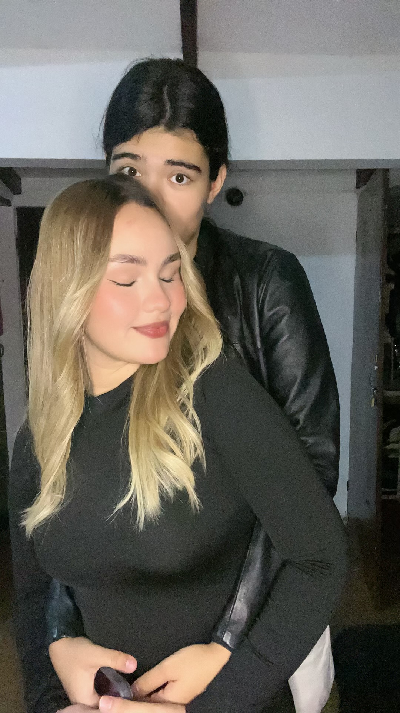
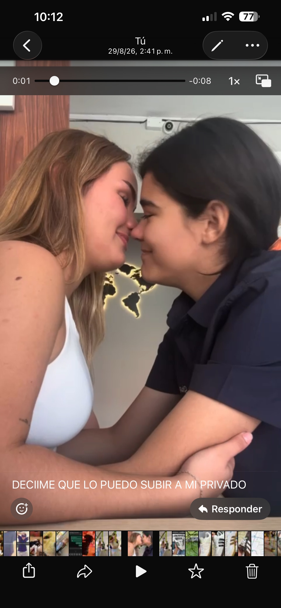
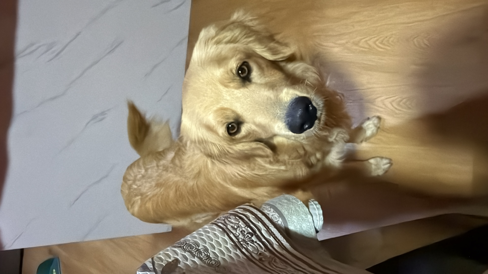

ANTES DE QUE TODO TUVIERA NOMBRE
Tobby robó un calzón 🐶
Porque toda gran historia necesita un personaje secundario completamente caótico. Tobby, nuestro hijo, consiguió su propio lugar en nuestra mitología.
Preparando nuestro pequeño universo…
tómate tu tiempoUNA PÁGINA HECHA SOLO PARA TI
mi amorch · mi sol · mi persona favorita
Hay cosas que no caben en un mensaje.
Así que hice un lugar donde podamos guardar todas.
La experiencia no tiene prisa. Quédate todo lo que quieras.
CAPÍTULO 01 · ANTES DE TODO
probablemente se parecería a esto: un montón de momentos pequeños que, cuando los junto, se convierten en algo enorme.
DESDE QUE EMPEZÓ TODO
Y cada segundo desde entonces cuenta.
Nuestra historia sigue avanzando mientras estás aquí.
CAPÍTULO 02 · NUESTRA HISTORIA
No todo ocurrió en un solo día. Fueron apareciendo momentos, personas, lugares, bromas y pequeñas costumbres hasta que nos dimos cuenta de que ya teníamos una historia.
Porque toda gran historia necesita un personaje secundario completamente caótico. Tobby, nuestro hijo, consiguió su propio lugar en nuestra mitología.
Porque quería verte. Y si para verte tenía que inventarme una excusa, aparecerme “de casualidad” o simplemente caer por ahí… pues se hacía.
Según tú, era evidente. Según yo, absolutamente nada era evidente. Hoy forma parte de nuestros chistes internos.
Una comida que se convirtió en uno de esos primeros lugares que ahora tienen historia.
Ese momento en que nuestra historia empezó a tocar también las historias que ya existían antes de nosotras.
Yo estaba trabajando en Miniso y terminó siendo otro de esos capítulos que hoy parecen parte natural de nuestra historia.
Un pequeño momento que todavía da ternura recordar.
Otro pedacito de mi mundo que pasó a conocerte a ti.
Porque amar no significa que nunca haya momentos difíciles. Significa que seguimos encontrando la forma de volver a elegirnos y hablarlo.
Obviamente. El recuerdo que tiene su propia puerta en esta página.
CAPÍTULO 03 · COSAS QUE SE QUEDARON
Esas conversaciones que supuestamente iban a ser cortitas y terminaban convirtiéndose en horas.
Un gesto que decía “estoy aquí” sin necesitar demasiadas palabras.
Otro clásico de nuestra historia.
Un momento que hoy parece pequeño, pero forma parte de cómo se fue mezclando nuestra vida.
Porque me daba miedo y, de alguna manera, tenerte ahí hizo que todo se sintiera un poquito más tranquilo.
Otro “primero” que se quedó guardado.
Otro pedacito de nuestras vidas encontrándose.
Cuando sin querer acosaste a una famosa llamada Muxi. Sí, esto merece estar documentado.
Yo todavía me río de que le preguntaras eso a un cantante. 😭
Y yo aquí siendo testigo de todo el universo que se arma alrededor de ti.
CAPÍTULO 04 · FOTOS REALES
Estas no son fotos de stock. Son momentos que ustedes mismas vivieron. Toca cualquiera para verla completa.










CAPÍTULO 05 · NUESTROS LUGARES
Cada punto guarda una escena. Abre los que quieras y recuerda.
La historia aparece aquí.
CAPÍTULO ESPECIAL · NUESTRO HIJO
No podía hacer una historia de nosotras y dejar afuera al pequeño delincuente que decidió robar un calzón y quedarse con el puesto de hijo.
CAPÍTULO 06 · CARTAS PARA TI
No abras todas de golpe. Cada una existe para un momento distinto.
CAPÍTULO 07 · COSAS QUE AMO DE SOLEY
Tu carácter. Tu físico. Tus ojos. Tu determinación. Tu inteligencia. Tu sinceridad. Cómo no te dejas por nadie. Cómo ayudas. Cómo apoyas. Cómo me das mi lugar. Cómo te llevas con tu familia. Todo.
“Aunque a ti no te guste a veces tu carácter, yo lo amo.”
— ManuelaCAPÍTULO 08 · 100 RAZONES
Toca el botón. No tienes que correr hasta la número 100.
Porque eres tú, y eso ya significa muchísimo.
Cada 10 razones hay una pequeña sorpresa.
CAPÍTULO 09 · NUESTRO DICCIONARIO
Nombre oficial de Soley cuando Manuela entra en modo cursi.
Porque hay personas que simplemente hacen más bonito el día.
“Deja tu pitillerismo.” Una frase que ya merece monumento.
“Es que sos muy fifi.” F-I-F-I. Literalmente.
Drama express. Generalmente con posibilidades de reconciliación.
Una palabra que, fuera de contexto, no explica absolutamente nada.
La energía de Soley resumida en dos palabras.
La respuesta de Manuela para muchas situaciones de la vida.
Actividad oficial de la pareja.
Se reciben. Se analizan. A veces… se captan tres semanas después. 😭
CAPÍTULO 10 · JUEGO DE NUESTRA HISTORIA
No hay puntos que te quiten. Si fallas, simplemente inténtalo otra vez.
CAPÍTULO 11 · COMPATIBILIDAD
Una prueba completamente científica hecha con cero ciencia y muchísimo amor.
CAPÍTULO 12 · PEQUEÑO JUEGO
Hay cinco corazones escondidos. Tócalos cuando los encuentres.
0 / 5 encontrados
CAPÍTULO 13 · CAJITA DE SORPRESAS
CAPÍTULO 14 · NUESTRA CANCIÓN
Jorge Cuéllar · Virlán García
La página empieza la canción desde el segundo 0:14. Cuando termina, vuelve a ese punto. Así puede acompañarte durante toda la historia, aunque tardes diez minutos, veinte o una hora.
CAPÍTULO 15 · TODAVÍA NOS FALTA MUCHO
No como una lista de cosas que tienen que pasar, sino como sueños que me encantaría compartir contigo.
Quiero vivir esa locura contigo, bailar juntas y tener una historia que algún día recordemos diciendo “¿te acuerdas?”.
Construir una vida que se sienta nuestra. Con calma, trabajo, risas, discusiones que sabemos resolver y muchos besos.
Según nuestro universo, nos van a salir gemelos. Así que, aparentemente, me toca trabajar el triple. 😭
Quiero llegar a ser una gran ganadera agropecuaria y que tú puedas verme cumplirlo.
Quiero verte crecer en redes, cumplir tus metas y conseguir trabajos que te gusten, donde te valoren y no te exploten.
Ese viaje de ensueño. Dos personas, agua, atardeceres y probablemente alguna pelea por quién se quedó con la mejor almohada.
CAPÍTULO 16 · ALGO QUE NUNCA SUPE DECIRTE
Soley, hay algo que quizá no te he sabido decir de la manera correcta.
Estoy mejorando. Puede que no siempre lo notes, puede que no siempre sepa explicarte el proceso y puede que a veces parezca que voy más lento de lo que quisiera. Pero estoy intentando.
No quiero perderte. Y no quiero que esa frase sea solamente algo bonito que se escribe en una página. Quiero que se vea en cómo te trato, en cómo escucho, en cómo aprendo, en cómo intento hacerlo mejor.
Te amo, y precisamente porque te amo no quiero quedarme exactamente en el mismo lugar. Quiero crecer. Quiero aprender. Quiero ser una mejor versión de mí y construir contigo desde un lugar más bonito.
No te prometo perfección. Te prometo intención, esfuerzo y seguir aprendiendo.
Y aunque quizás todavía no te hayas dado cuenta de todo lo que estoy intentando cambiar, quería que algún día pudieras leer esto y saberlo.
Te amo.
— Manuela
CAPÍTULO 17 · UNA ESTRELLA PARA TI
le pondría tu nombre. Pero como no puedo, te dejo esta.
Y si alguna noche estás viendo esta página, recuerda:
“En algún lugar estoy pensando en ti.”
CAPÍTULO 18 · LA FLOR
Cada cosa que descubriste en la página alimenta esta pequeña flor.
Todavía está creciendo…
CAPÍTULO 19 · ULTRA SECRETO
Pista: es pequeña, pero contiene todo.
CAPÍTULO 20 · LOGROS
CAPÍTULO 21 · MÁS COSAS QUE QUIERO VIVIR
☐ Más conciertos juntas
☐ Más pijamadas
☐ Más fotos feas que nos hagan reír
☐ Más viajes
☐ Más cenas improvisadas
☐ Más amanecidas hablando
☐ Más días tranquilos
☐ Más “pásame tu QR”
☐ Más “deja tu pitillerismo”
☐ Muchísimos más capítulos
CAPÍTULO 22 · COSAS QUE TODAVÍA FALTABAN
Aquí guardé algunas de las ideas que también quería que existieran: una conversación de mentira, un antes y después, un pequeño calendario, una carta desde el futuro y una pregunta completamente innecesaria pero importantísima.
Última conexión: para siempre.
Un montón de días normales.
sin este capítuloLos mismos días, pero con una historia que contar.
con nosotrasPresiona el botón y deja que el universo decida.
Imagina que pasó muchísimo tiempo y seguimos teniendo historias nuevas.
Haz clic en las fotos, abre cartas, encuentra corazones, toca los regalos y vuelve a mirar alrededor. Algunas partes de esta página están hechas para encontrarse, no para anunciarse.
ÚLTIMO CAPÍTULO · POR AHORA
28 de agosto de 2026
El día que empezó nuestra historia.
Gracias por ser mi amor.
Gracias por ser mi sol.
Gracias por ser mi persona favorita.
Gracias por cada recuerdo que ya tenemos y por todos los que todavía no sabemos que vamos a crear.
Te amo.
Y si tuviera que volver a elegirte,
te elegiría todas las veces.
— Manuela